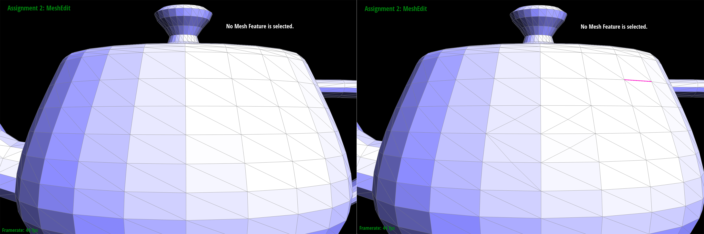
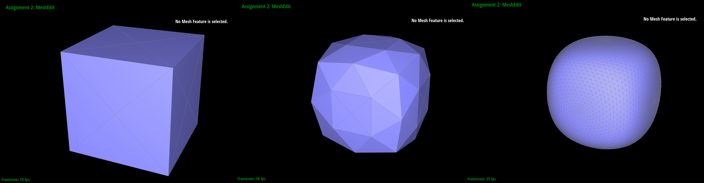
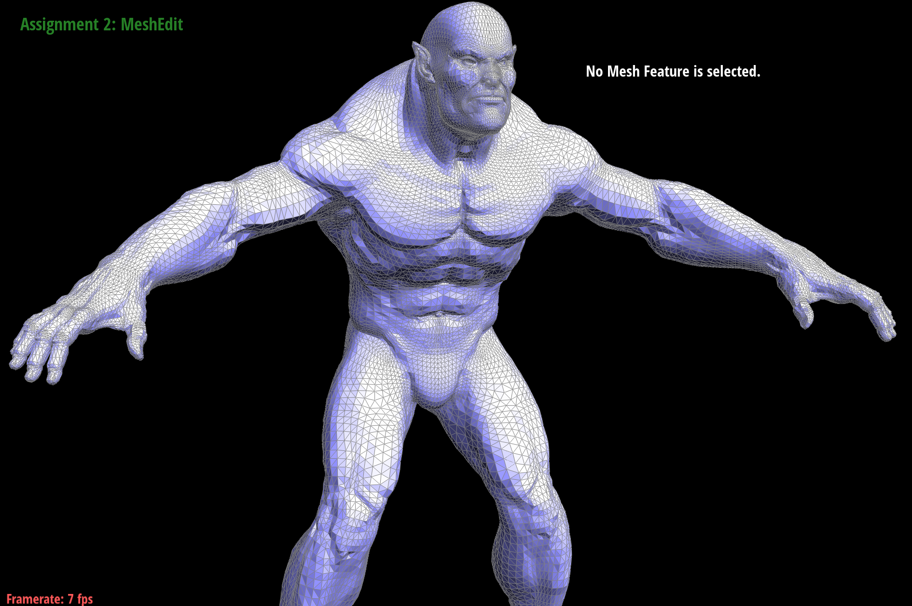

In this project I created a program which can render Bezier curves on a 1D line in a 2D space and render Bezier curves over a 2D plane in a 3D space which aided in rendering 3D meshes in the mesh edit program. I then worked out how to calculate area weighted normal vectors which allowed the program to do Phong shading over the mesh with use of barycentric interpolation. After this I implemented some functions that could perform split and flip operations on edges in the mesh which I then used to successfully implement a up sampling operation which can be recursively called to obtain higher resolution meshes.
In this part I implemented a function which can take a list of n points and return a list of n – 1 points which are the interpolated values between each of the points in the list inputted as an argument into the function. The values in the returned list are interpolated with a value t which is in between 0 and 1. This function can then be recursively/ iteratively called until there is only one element from the list returned. This value is the point on the Bezier curve associated with that value of t. To render a full Bezier curve on the screen, the algorithm has to be done on an evenly distributed set of values of t ranging from 0 to 1 at a specified sample rate such that the curve will look continuous.
During this part of the project, I implemented a function that calculates a 2D Bezier plane in a 3D space as opposed to calculating them on 1D lines in a 2D space. The first function that had to be made is one that can calculate a 1D Bezier curve that can handle 3D Vectors. This operates in the same way as the function created in part one but can do the 1D Bezier curve calculations while ignoring one axes in the 3D space. After successfully implementing this I then called it on all of the sets of points along one of the axis on the 2D plane and found the locations of these points’ respective Bezier curve. Then I calculated the location of the Bezier curve at the desired position on the 2D plane using the points calculated in the previous calls to the 1D Bezier curve function in a final call to the function but along the perpendicular axes to the previous calls.
In this part, I programmed a method that can calculate the Area-Weighted Vertex normal of a vertex using the half edge data structure. The function is able to do this by navigating the faces adjacent to the vertex and adding their normal vector multiplied by their area to a vector which at the end of this navigation will have the sum of all of the faces’ normal vectors multiplied by their areas. After normalizing this value, the area weighted vertex normal has been calculated. This can be used to carry out Phong by interpolating these vertex normals across a triangle using barycentric coordinates.
Teapot without Phong shading:
Teapot with Phong shading:
To implement edge flipping, I first drew out a diagram of the initial state of the edge, the four vertices that surround it and the edges/ half edges that connect these 4 vertices and assigned every object in the diagram a variable name. After this I drew a diagram of the same components in the first diagram but after an edge has been flipped. Then I programmed the function by first assigning every object on my graph as a variable on the computer and correctly locating these components’ relative positions along the half edge structure in comparison to the starting edge. I then reassigned all the relevant pointers to make the new formation.
Due to this approach, I did not spend much time debugging part 4 and 5.
Before flips:
After 4 flips:
I used a similar approach when implementing the edge split function as I used to do the flip edge function. The only difference was I had to create a new vertex and some new edges/ half edges. By using the same approach as I described in Part 4 using diagrams that I have drawn I was able to successfully reallocate all the relevant pointers to perform split edge correctly.
Before and after a series of splits:

Before and after a series of splits and flips:
I successfully implemented a function that is able to up sample a mesh such that it has a higher resolution of triangles describing the 3D model. I did this in 5 different sections within the function.
Loop 1: In the first part I iterated through every vertex in the mesh and calculated a new position for this vertex, calculated by averaging the positions of every vertex that it is connected to via an edge. After this the new position is calculated by interpolating between the original vertex and the average position of its neighbors by a value determined by the degree of the vertex. I also marked that all these vertices are not new by changing their respective isNew values to false.
Loop 2: Next, I iterated through all the edges in the mesh and calculated a new position that could be given to the vertex that is placed in the middle of the edge should the edge be split. This was calculated by taking a weighted average of the vertices surrounding the edge, the vertices that are connected to the edge make of 3/8 of the final position each. The two vertices that form triangles with the two vertices at each end of the edge are weighted to form 1/8 of the new edge position each.
Loop 3:After this I iterated through all of the edges in the mesh and split them. When doing this I set the newly created edges’ isNew values to true and the newly created vertex was also set to true. In the split edge function the edge that is split is actually split up into two separate edges, both of these edge’s isNew values are set to false. The newly created vertex’s new position is set to the new position value created for the edge that is split. The edge’s new position was calculated in loop 2.
Loop 4: Next, I flipped every new edge that was connected to 1 new vertex and 1 vertex that is not new.
Loop 5: Lastly, I updated all of the vertex positions to their new positions. All the vertices in the graph have a new position because I set them in loop 1 and loop 4.
Below shows the process of upsampling a cube. In both of the sets of photos below, the furthest left photo has not been upsampled, the middle photo has been upsampled once and the furthest right photo has been upsampled 3 or 4 times (as many times until my computer slowed down considerably.
The photo below shows a cube as described in cube.dae given in the starter code. Due to the edges on each face having a different orientation, the cube becomes asymmetric as it is upsampled.
By splitting all the diagonal face edges such that all the faces look the same, the cube now maintains its symmetry as it is upsampled.

Mesh of a beast with no upsampling:

Mesh of a beast after one call to upsample: